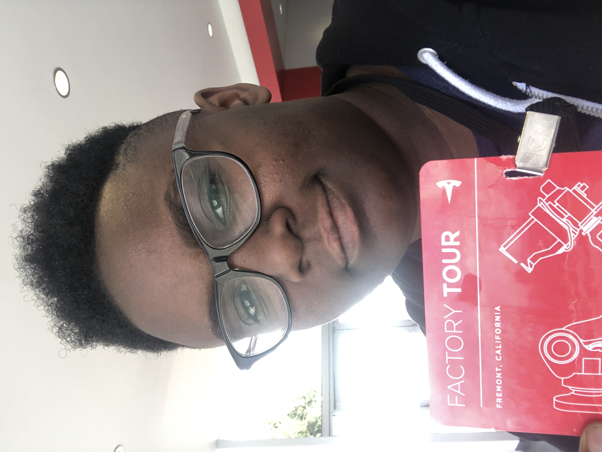

Jaz's Portfolio
 I am a rising Junior at Alabama Agricultural and Mechanical University in Huntsville, AL. I was born and raised in Philadelphia, PA. I am a returning intern with Google. When I was younger I wanted to become a veterinarian like any other kid. It wasn't until high school that I was introduced to computer science correctly and flew with it. Before COVID-19, I spent my time on campus aiding my classmates, underclassmen, and other peers on their path with CS. No matter if it was aiding at study sessions or getting them to apply to opportunities that they don't feel they are ready for.
Computer science aside, I have multiple interest and hobbies. I enjoy playing video games on my Nintendo Switch and am (slowly) teaching myself how to play the guitar in between binging Netflix and Hulu. I have many interests including photography, mobile technology,police cars,and working/sport dogs. However, what makes me, me is beyond what is on this list. I am not myself without my sarcastic and witty remarks. I'm known for my laid back attitude, introverted ways, but most definitely for my pride in the LGBTQ+ community.
As things have escalated exponentially over the last couple days, my background needs no introduction. As a black woman, the last couple days have plagued my mind and as the daughter of a police officer, it's not completely one sided and I wish for safety for both sides but more than anything, I want justice for George and changes within the system and I feel it's the most important thing I can do right now.